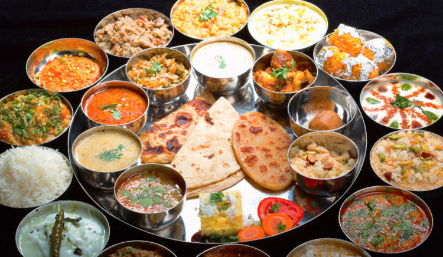

Rajasthani Thali

Presenting a total rustic Rajasthani Thali. Dal Bati Churma is a typical Rajasthani treat.
The highlight of a Rajasthani thali is the GHEE (clarified butter).
Everything is cooked in ghee, dipped in ghee and served with ghee.
Under process...
Back to the Recipes